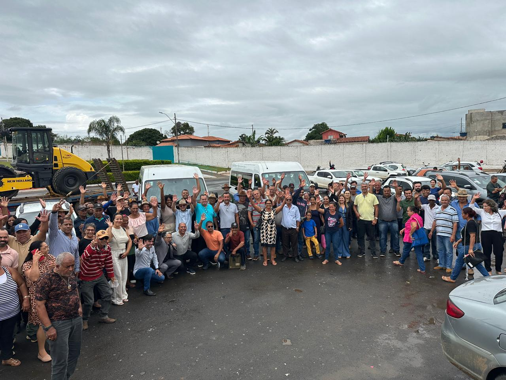
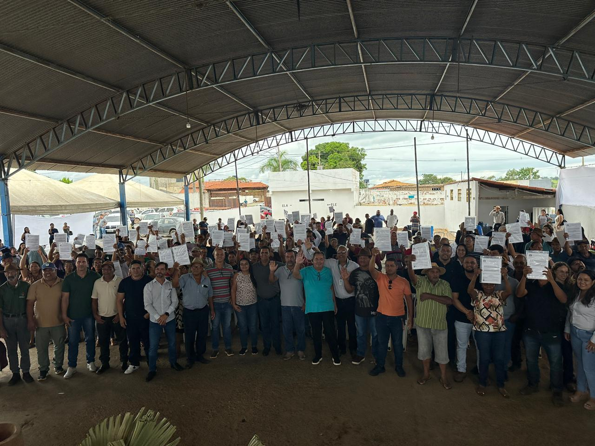
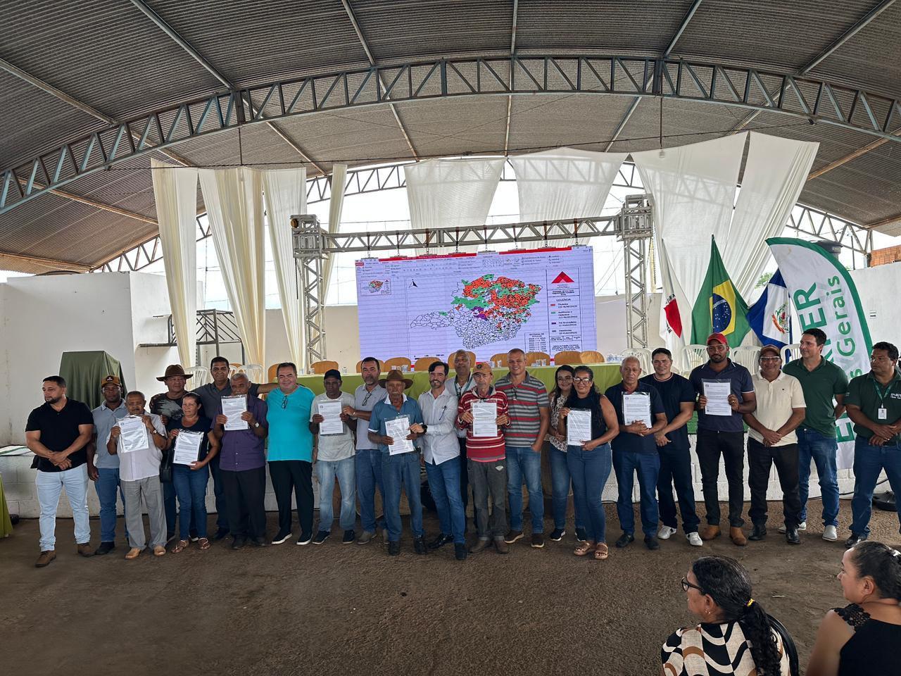
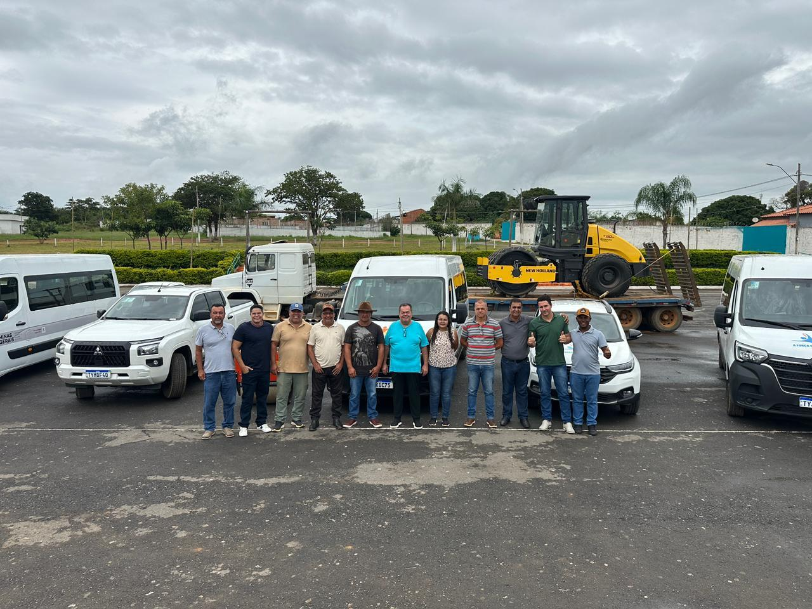
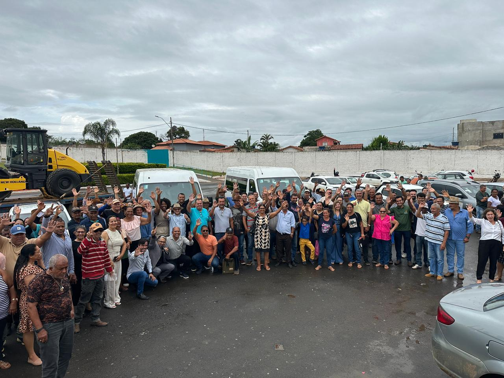
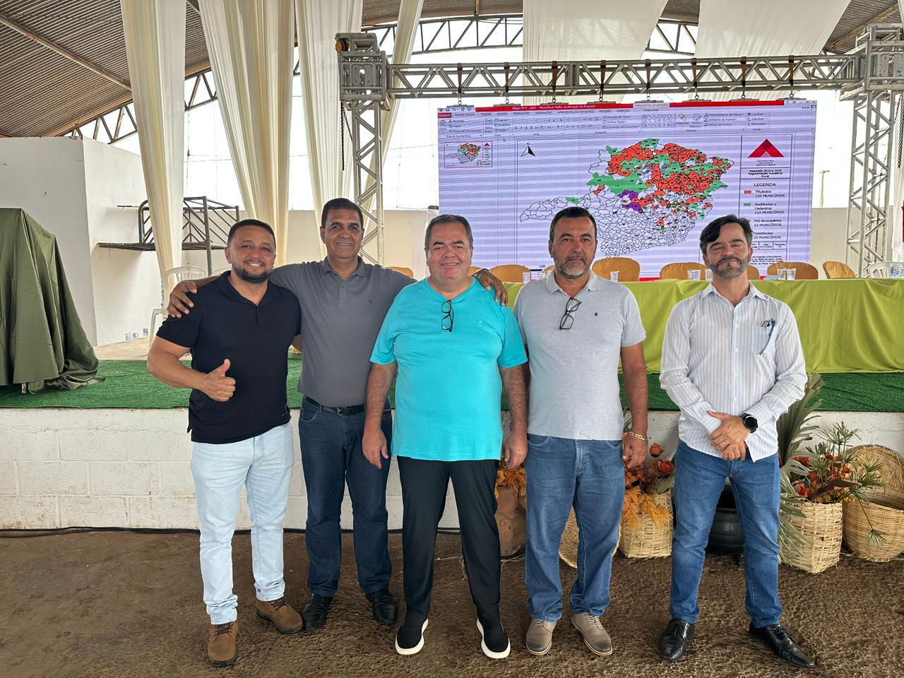

Prefeitura Municipal de
SÃO JOÃO DA PONTE - MG


AGRICULTURA E MEIO AMBIENTE
SECRETARIA
A Secretaria Municipal de Agricultura e Meio Ambiente é o órgão responsável por planejar e executar as políticas de desenvolvimento rural e agropecuário do município. Seu foco principal é apoiar o produtor rural e o setor agroindustrial local, promovendo o aumento da produtividade, a sustentabilidade das atividades no campo e a melhoria da qualidade de vida das famílias rurais. A Secretaria atua fornecendo assistência técnica e extensão rural, incentivando a diversificação de culturas, facilitando o acesso a programas de crédito e coordenando a manutenção de estradas vicinais essenciais para o escoamento da produção. Em resumo, ela é fundamental para a segurança alimentar do município e para o fortalecimento da economia rural.
FUNÇÕES PRINCIPAIS
Assistência Técnica e Extensão Rural (ATER)
Infraestrutura Rural
Desenvolvimento Econômico e Mercado
Sustentabilidade e Inspeção
PROGRAMAS E PROCESSOS SELETIVOS
Edital Nº 02/2025
Programa de Aquisição de Alimentos – PAA
CAMINHOS DA AGRICULTURA: Distribuição e Resultados
ENTREGA DE TÍTULOS DE REGULARIZAÇÃO FUNDIÁRIA, VEÍCULOS E MÁQUINAS NOVAS PARA O SERVIÇO PÚBLICO MUNICIPAL
A Prefeitura Municipal, por meio da administração “A Força que vem do povo”, realizou no dia 11 de fevereiro uma importante ação voltada ao desenvolvimento social e à melhoria dos serviços públicos. Na ocasião, foram entregues títulos de regularização fundiária, um passo fundamental para garantir segurança jurídica às famílias beneficiadas, promovendo dignidade, valorização dos imóveis e o direito definitivo à moradia.
Além disso, a gestão municipal realizou a entrega de novos veículos às secretarias municipais, reforçando a frota e proporcionando melhores condições de trabalho às equipes, o que reflete diretamente na agilidade, eficiência e qualidade do atendimento prestado à população.
A iniciativa reafirma o compromisso da Prefeitura com uma administração responsável, próxima das pessoas e focada em ações concretas que melhoram a vida dos cidadãos. É a força do trabalho público chegando a quem mais precisa, com respeito, cuidado e compromisso com o futuro do município.





